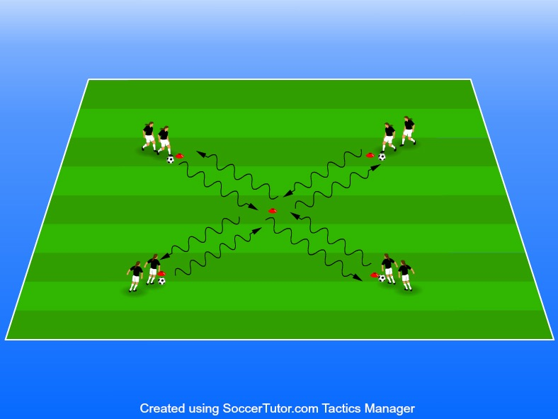

Drivteknik, finter & att få upp blicken
Yta 12 x 12 m (kan varieras)
8 – 12 spelare, 2 –3 spelare i
4 bollar
4 koner
Spelare som står först i kön startar samtidigt och driver diagonalt • 4 bollar över till spelaren mitt emot • 4 koner
Bollen lämnas sedan över till spelaren som står först i ledet på andra sidan som gör likadant.
Se till att spelarna har bollen nära kroppen och fokuserar på att ha Betona vikten av timing i alla blicken uppe så att de undviker att krocka dessa variationer. Vi tränar inte VARIATIONER heller här på att det ska gå fort utan vi ska ha kontroll och inte • Driv bollen med i lugnt tempo och instruera att de försöka ha blicken springa in i varandra. rakt fram samt många touch på bollen. • Driv bollen bara med t ex höger fot, vänster fot, sulan, insida höger/ vänster fot osv alla de variationer som finns i “Drillen”. • Sedan kan man växla på en fint i mitten. Här krävs det från ledare att Exempel på finter: betona vikten av timing 1: Kroppsfint-Gör en rörelse åt ett håll med kroppen och gå sen åt andra hållet med bollen 2: Överstegsfint- Gör en utåtgående cirkulär rörelse över bollen med ena benet och flytta bollen snett framåt med utsidan med andra foten. 3: Skottfint - Låtsas påbörja en avslutsrörelse för att sedan dra med bollen sidledes • Det går även att träna vändningar genom att driva upp till mitten och Exempel på vändningar: sedan driva tillbaka till egen kona och lämna över bollen 1: Cruyff-vändning - Oftast kombinerad med en skottfint. Flytta bollen bakåt med toppen av insidan av foten. 2: Utsida - Vänd med utsidan av foten. 3: Insida - vänd med insidan av foten 4: Sulvändning - vänd genom att dra bollen bakom dig med sulan